A safety net only works if it asks nothing at the wrong moment
The key was a good idea asked at the worst time. Moving the ask to after 50 runs, with the player’s own number on it, mattered more than the method.
Account recovery for a cricket game with no sign-up: a key players didn’t keep, then a password their phone keeps for them.
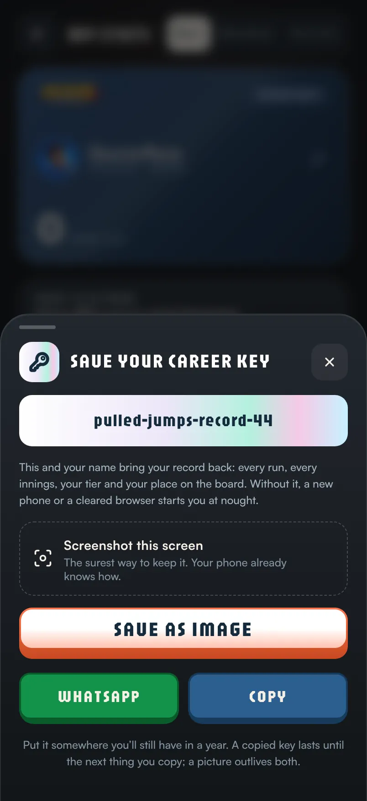
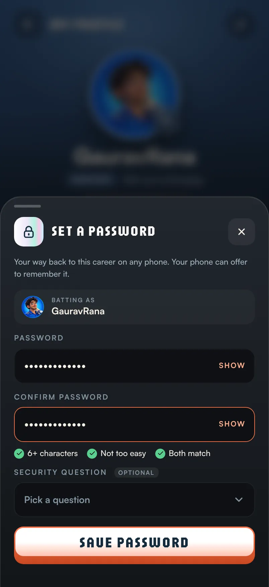
pulled-jumps-record-44
Hitman Cricket is played in your phone’s browser. There is no sign-up: you tap PLAY and you’re batting in seconds. That was a deliberate choice, and it came with a hidden cost.
Each player is a random ID stored on their phone. No email, no password, no account. The game knows you only because your browser remembers that ID.
Once the game added careers, tiers and leaderboards, a lost ID stopped costing one high score. It cost everything: every run, every unlock, your place on the board. The longer you played, the more you had to lose.
| What happens | Browser storage | A cookie the game writes | A cookie the server sets |
|---|---|---|---|
| An iPhone, a week without playingSafari clears the site’s data | Gone | Gone | Kept |
| The player clears their browser | Gone | Gone | Gone |
| A new phone | Gone | Gone | Gone |
| The link opened inside WhatsApp or Instagram | Separate | Separate | Separate |
We kept the ID in several places so one loss wouldn’t cost a career, and a server-set cookie quietly brought 8 players back after Safari cleared them. But in three of these four cases, the only thing that survives is something the player carries with them.
One tap to play is the product. A form before the first ball would lose players before they ever hit a six.
No budget for one-time codes, no mail server, and no wish to collect personal data for a casual game.
Every name is printed on the leaderboard. So a name alone can never prove who you are.
My first answer was a key the game hands you once. Your name plus your key brings your career back on any phone.
pulled-jumps-record-44
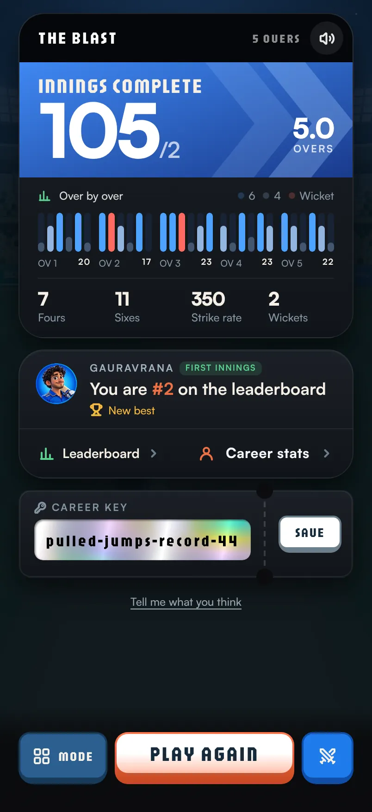
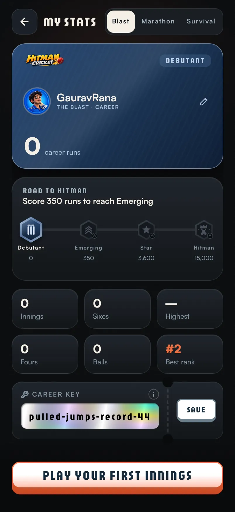
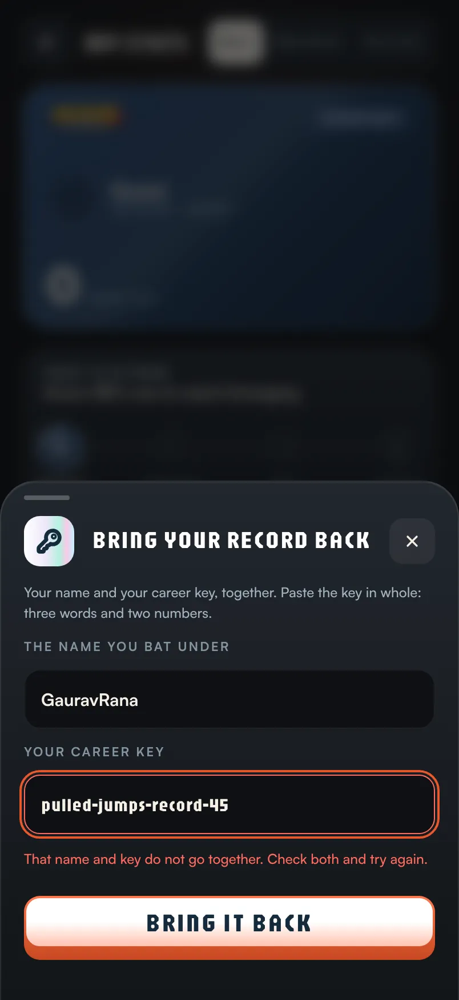
A screenshot is the one save every phone can do, and nothing can fail. So the sheet led with “Screenshot this screen”, then Save as image, WhatsApp to yourself, and Copy.
The clipboard holds one thing. The next copy wipes the key, and the player never knows.
The game paints a clean card with the name and the key, ready for the camera roll.
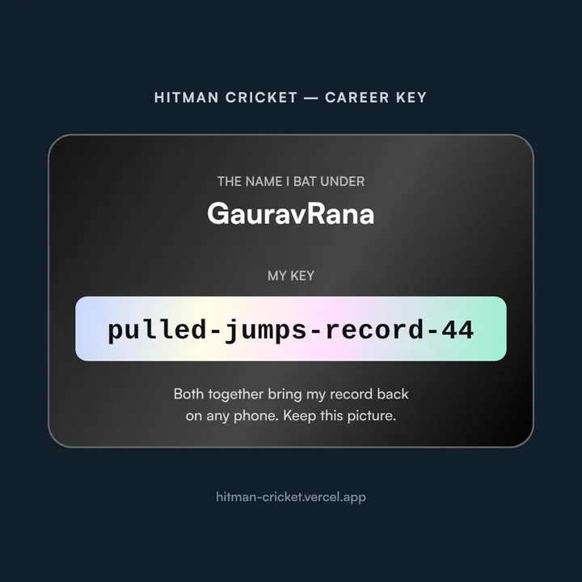
A key found in a gallery a year later with no name beside it is a riddle, not a record.
A copy button on the card looked kinder, but people tap by reflex. We’d have counted a save while they held nothing.
A fake “saved” is worse than no save: it stops every reminder.
A player sitting 4th with 2,000 runs told us they’d never been given a key. Keys were only made when a name was claimed, so the game now asks for one quietly the moment an old player opens it.
The people with the most to lose were the last to be protected.
I measured every step: who saw the sheet, who saved, how, and who came back. Over 24 days the pattern was clear.
Most people left with nothing
Nearly half turned away
“Other refusals” were counted before refusals were split by reason.
The key was homework. We asked players to do the saving, at the exact moment they wanted to hit PLAY AGAIN.
Losing a career is a maybe, someday. Playing again is right now. People pick now.
People remember what they choose much better than what they’re given. Nobody remembers “pulled-jumps-record-44”.
To return you had to find a screenshot among thousands of photos and type it perfectly. Recall under pressure, at the worst time.
The end card is where people decide to play again. A save task there competes with the most exciting button in the game.
The real question wasn’t “how do we make people save the key”. It was who does the remembering. With the key, the player did all of it. Phones already have a tool for exactly this job.
| Option | Effort for the player | Cost and setup | Survives a new phone | Verdict |
|---|---|---|---|---|
| Keep the career key | High: save it, find it, type it | Free | If they kept it | Kept as a backup |
| An email link | Type an email, open the inbox | A mail service, spam folders | Yes | A form feels wrong in a quick game |
| A phone one-time code | Low, and familiar in India | Pay per SMS, sender registration | Yes | Too costly for a free game |
| Sign in with Google | One tap | OAuth setup, shares personal data | Yes | Maybe later |
| Passkeys | One tap, very safe | Patchy in in-app browsers | Yes, synced | The next step |
| A password | Pick once; the phone remembers | Free, works everywhere | Yes, synced by the phone | Chosen |
Never before the first ball. The game waits until your career passes 50 runs, about one or two innings. Then the runs feel like yours.
The form is built so Safari and Chrome offer to save the password against your name, then fill it in next time, even on a new phone.
Coming back, you type a few letters and pick yourself from a list, with your kit and innings count, so you know it’s you.
No hard stop and no asks mid-innings. Players can always bat, with or without a password. Pressure breeds resentment, not passwords.
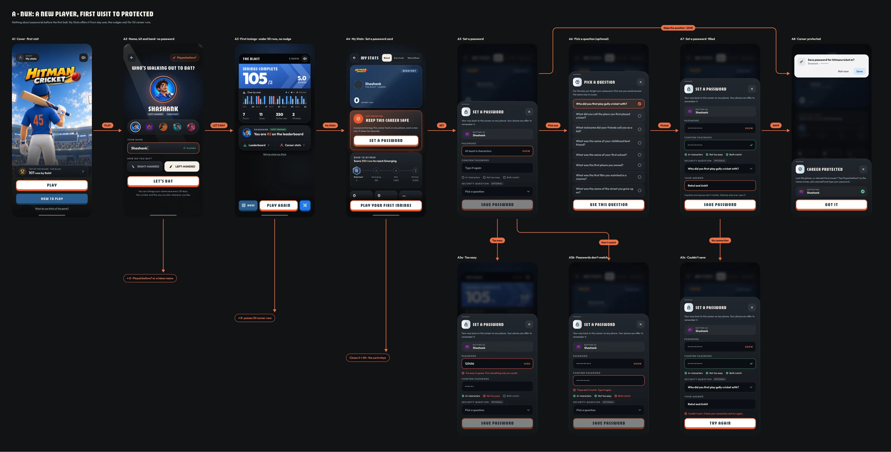
One rule for new and returning players alike: no password and 50+ career runs. Every existing player was already past it. New players get there in an innings or two.
It grows only while the password is missing, and stops for good once it’s set
The numbers along the top count innings after a player passes 50 runs. Each orange block is one end card; each gold dot is one bottom sheet.
Never: on the name screen, mid-innings, as a hard stop, in a private window, or after a practice innings.
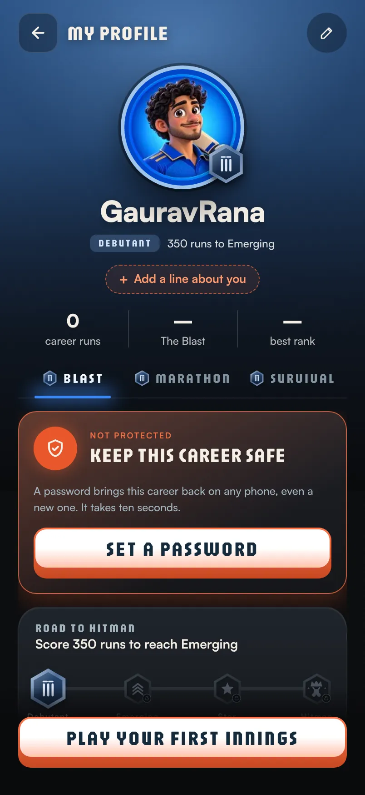
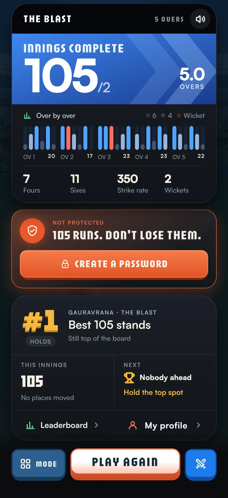
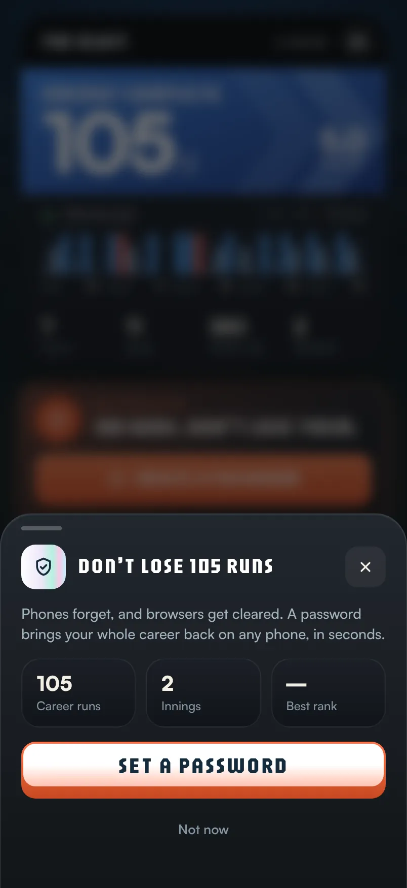
| Moment | Why here | The psychology |
|---|---|---|
| My Stats, always | People open My Stats to admire their progress. That is when they care most about keeping it. | Self-motivation, zero pressure |
| End card, from 50 runs | The emotional high of the game. The number they just made is on screen. | Loss aversion, the peak-end rule |
| After a new best | “Your best ever, 87. Protect it.” The proudest moment gets its own line. | Endowment effect |
| A sheet after 3 walked past | A card ignored three times has become wallpaper. A sheet breaks the pattern, then backs off. | Banner blindness, spaced reminders |
| Never mid-innings, never a wall | Batting is the product. An ask that stops play makes people resent it. | Reactance, autonomy |
A button that can’t be mistaken for PLAY AGAIN. The end card already has the game’s biggest button. CREATE A PASSWORD is solid orange in a card of its own, straight under the score, so a thumb heading for PLAY AGAIN never lands on it by accident. The career key left the end card, so only one thing is asked at a time.
Every nudge opens the same sheet. It is short, honest about its rules, and built so the phone can do the remembering.
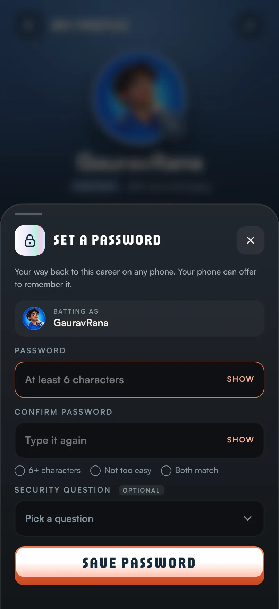
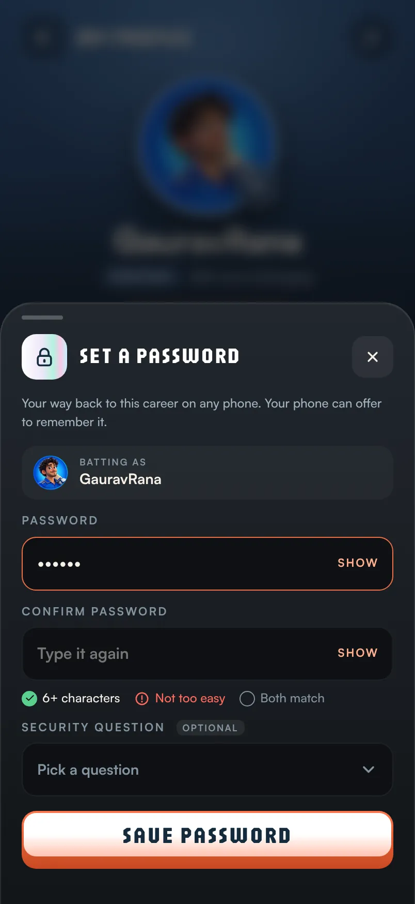
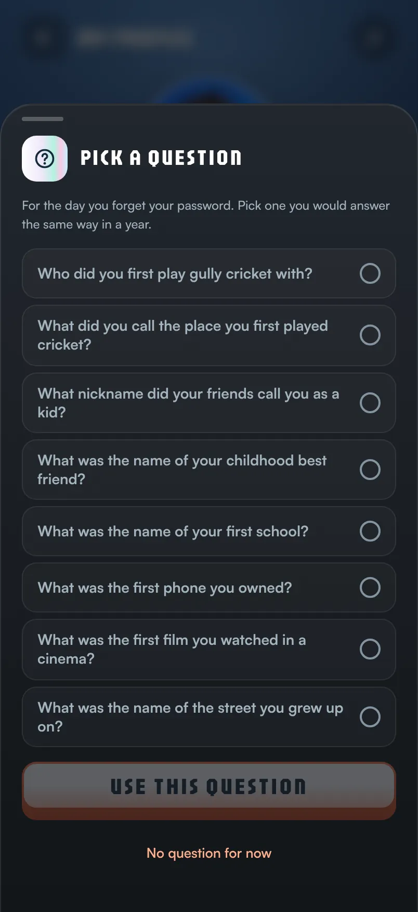
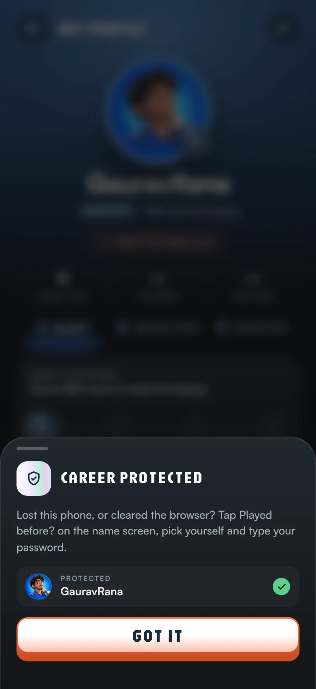
Six or more characters, not too easy, and both match. Shown as a checklist that turns green, not an error after you submit.
An error after the tap feels like a scolding. A checklist feels like progress.
No “one capital, one symbol” rules. We refuse 123456, abcdef, password and your exact name: GauravRana is refused, GauravRana07 is fine.
Your name is printed on the leaderboard. Everything else is your choice.
Typed twice, with SHOW on both fields.
One typo on a phone keyboard would lock a career away.
For a forgotten password. Eight questions, like “Who did you first play gully cricket with?”.
I left out “favourite cricketer”: half of India would answer Virat.
Case, spaces and punctuation are ignored, so “Rahul S.” matches “rahul s”. Answers are stored hashed, like the password.
The point is to let the right person in, not to test their typing.
Your details on My Stats has a password row with CHANGE. The card on My Stats disappears once a password is set.
A finished task should leave the screen.
A wiped browser looks exactly like a brand-new player. So the very first screen a new player sees now offers a way back.
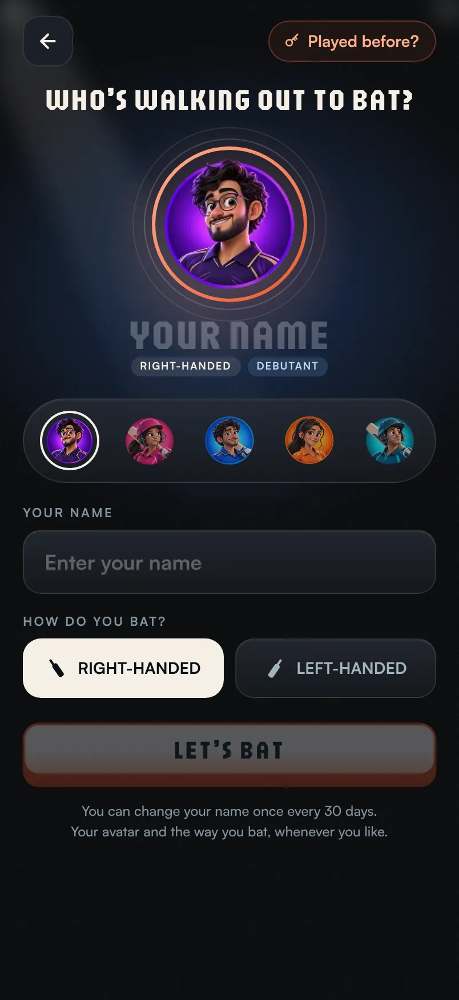
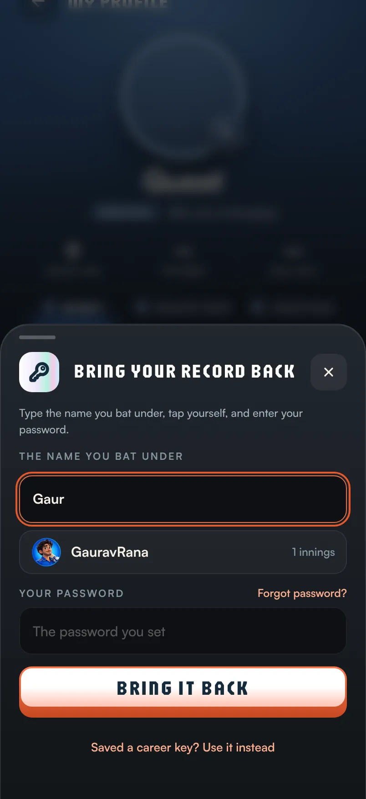
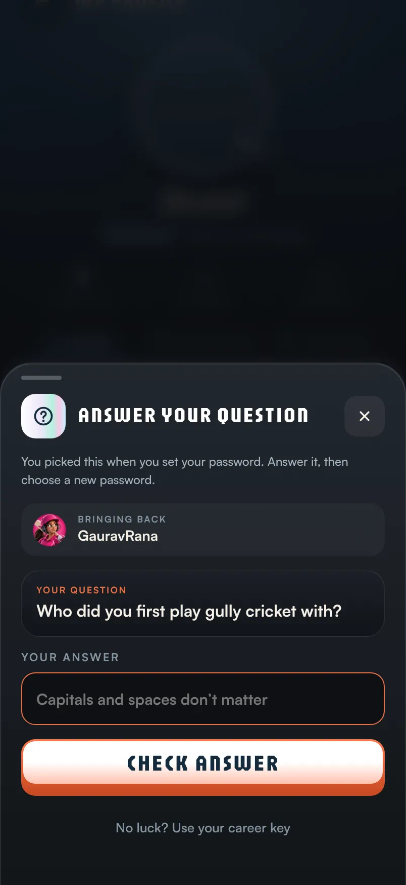
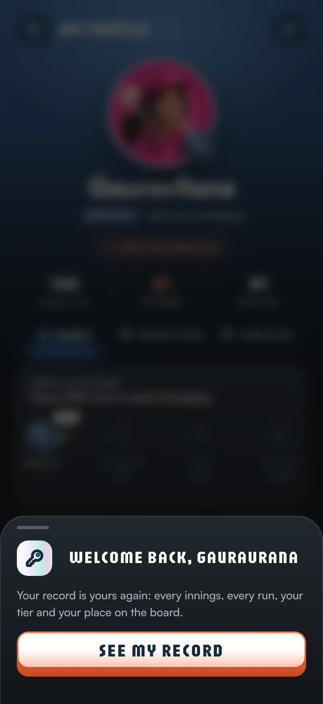
A name with nothing behind it to type is no way back, so it isn’t shown.
The list gives a name, a kit and an innings count. Never the private ID that owns the career.
Password, then your security question, then your career key, then a message to the developer. Each is offered only when the one before it can’t help.
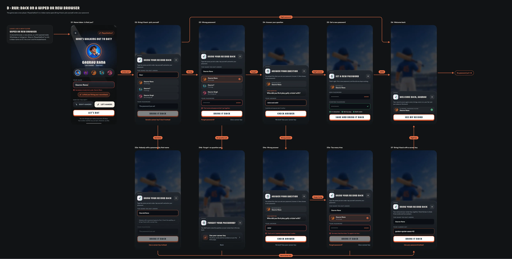
The first 13 days after launch, 16–28 October. Event counts from GoatCounter; the game is young and the numbers are small, so I read them as direction, not proof.
The end card carries it
End card nudge
Bottom sheet
My Stats card
Not one password turned away
Both bars share one scale: 17 tries.
The key was a good idea asked at the worst time. Moving the ask to after 50 runs, with the player’s own number on it, mattered more than the method.
I spent my first round on how to save a key. The failures were all on the way back in. Picking yourself from a list fixed more than any save button did.
Phones already sync passwords across devices. The best design decision was building the form so they could do their job.
Name and key, the save sheet, the way back.
The screenshot becomes the hero. Save as image. Keys for players who never had one.
Keys sealed so I can read one back for a friend, and reset it.
A new player, the nudges, protected, a wiped browser, the edge cases.
Asked from 50 runs. The key moves to the end of My Stats.
The end card works. The sheet needs rethinking.